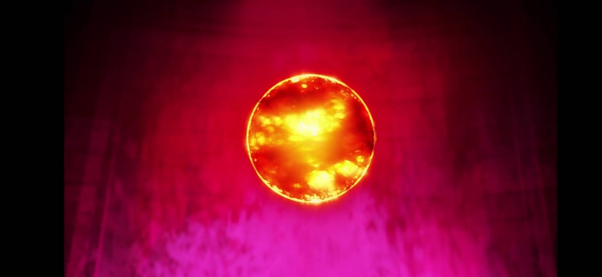
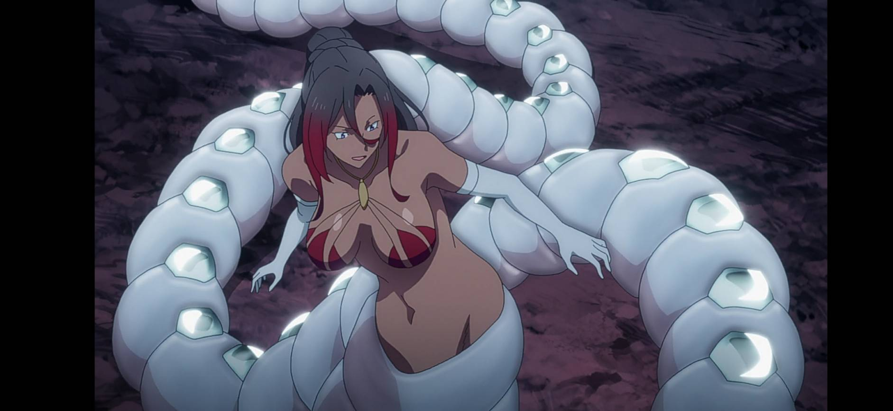
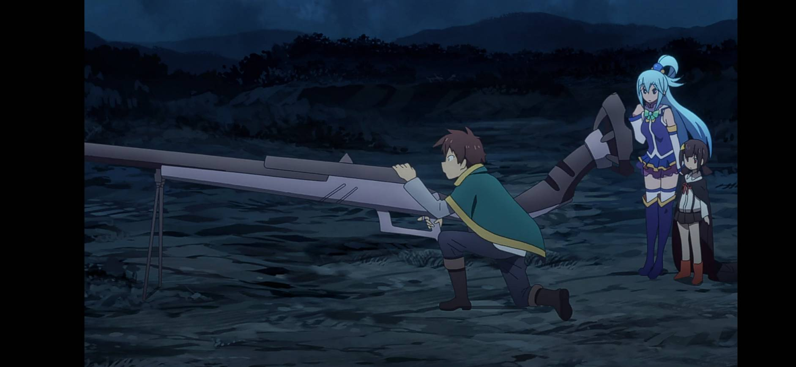

此網站由Playmaker特別製作(資料來源:維基百科)
其他 |
城市 |
冒險者相關 |
生物 |
據說和冬將軍一樣，都是不知道哪個具備作弊性能的日本人隨便取的名字，但聽說見過毀滅者的人，都認爲這個名字很貼切。原本是魔道技術大國「諾伊士」建造來對抗魔王軍的兵器，因為負責人(聲優：長 (日本配音員))在設計紙上打死一隻蜘蛛而被當成是設計圖，因此外觀上呈現出類似蜘蛛的外型，後來因為來自日本的製造負責人亂搞而暴走。擁有堅硬的外表和強大的魔抗結界保護著，據稱經過之處除阿克西斯教徒之外其餘寸草不生。在阿克塞爾前被和真及眾多冒險者摧毀。
機動要塞毀滅者的動力來源，被維茲以隨機傳送方式傳送到阿爾達普宅邸中，把阿爾達普的宅邸給炸了，並讓佐藤和真背上叛國罪名。
由機動要塞毀滅者發明人開發，原要以臘腸狗作為外型的犬型兵器，因為繪畫技術太差反而成為蛇型兵器，魔法攻擊對其完全無效。不過因為沒有備用電池無法繼續使用，雖然把紅魔族嚇得不輕，但還是把他封存在紅魔之里並嚴加看守，預計日後當合成獸材料，紅魔村事件的發生就是跟該物有關，此兵器被魔王軍幹部席薇亞吸收後大肆破壞村子，之後被和真以超電磁砲一擊摧毀（事實上是米米在和真喊台詞到一半之時替他扣下板機）。
紅魔族人拜託機動要塞毀滅者發明人開發，足以對抗「魔術師殺手」的武器。外觀像是一把特大號步槍，使用方式是吸收大量魔法壓縮之後打出去，是一種將魔法力量轉換成物理力量的武器。由於開發者認為打個幾發就報廢了，不實用，所以被衣服店老闆拿去當曬衣桿，直到紅魔村事件爆發後才正式重出江湖，並意外性吸收了惠惠的爆裂魔法補充巨大的魔力能量後，一發摧毀魔術師殺手，但因爆裂魔法的巨大魔力的浮誇而使該武器直接報廢。
機動要塞毀滅者發明人為了要保護紅魔之里而製作之機器人，具有自我修復、高速隱身，以及使用炸裂魔法的能力，平時在紅魔之里的外山區活動。不會攻擊紅魔族，但是因為製作者對於轉生而來的日本人都組成後宮團隊大感不滿，故設定優先攻擊黑髮黑眼的日本人。被惠惠用爆裂魔法炸了。
回到最上面